Exploração, Limpeza dos dados e Visualizações
Trabalharemos com três datasets. O primeiro é um subconjunto do ICOADS (International Comprehensive Ocean-Atmosphere Data Set) fornecido pela NOAA (National Oceanic and Atmospheric Administration) que possui vários dados climáticos de cobertura mensal, desde 1800 até o presente, e com abrangência marítima; Possui dados como temperatura do mar, umidade, pressão, cobertura de nuvens, velocidade de vento, etc.
Na célula abaixo, há um código que baixa o subconjunto que usaremos diretamente da fonte oficial. Não colocamos estes arquivos no GitHub por conta do limite de tamanho imposto sobre os uploads/commits.
# !sh ../download_data.sh
O segundo grande conjunto de dados é o HURDAT2 cuja fonte oficial é a NHC (National Hurricane Center), divisão da NOAA responsável pelos furações e tempestades.
Os dados do Kaggle fornecem dados de tempestades e furacões desde o século XIX até 2015 no pacífico e atlântico, mas iremos focar nossa análise no dadaset do atlântico.
O terceiro, é um dado com o índice PDI, mas ele já vem da fonte em boas condições e não necessita de limpeza. Veja mais no notebook PowerDissipationIndex.ipynb.
## Imports
%matplotlib inline
import numpy as np
import matplotlib.pyplot as plt
import matplotlib.colors as c
from mpl_toolkits.basemap import Basemap,shiftgrid
import pandas as pd
import netCDF4 as nc
from math import sin, cos, sqrt, atan2, radians
import scipy
import geopy
import xarray
import networkx
import requests
import cartopy
import tropycal
import tropycal.tracks as tracks
import tropycal.tornado as tornado
import datetime as dt
import statsmodels.api as sm
from statsmodels.api import OLS
Dataset ICOADS
Vamos analisar os dados baixados acima. O formato .nc é legível ao python através da biblioteca netCDF4 que está nos pré-requisitos. Além disso, serão necessárias instalar os pacotes abaixo; Descomente a célula, execute-a e dê um "Restart Runtime" no Jupyter. Certifique-se que instalou todos os pré-requisitos do arquivo "requirements.txt".
# !apt-get install libgeos-3.5.0
# !apt-get install libgeos-dev
# !pip install https://github.com/matplotlib/basemap/archive/master.zip
Análise de dados faltantes
sst_mean = nc.Dataset('../Datasets/sst.mean.nc','r')
rhum_mean = nc.Dataset('../Datasets/rhum.mean.nc','r')
wspd_mean = nc.Dataset('../Datasets/wspd.mean.nc','r')
slp_mean = nc.Dataset('../Datasets/slp.mean.nc','r')
vwnd_mean = nc.Dataset('../Datasets/vwnd.mean.nc','r')
cldc_mean = nc.Dataset("../Datasets/cldc.mean.nc",'r')
lats = sst_mean.variables['lat'][:]
lons = sst_mean.variables['lon'][:]
time = sst_mean.variables['time'][:]
sst = sst_mean.variables['sst'][:,:,:]
rhum = rhum_mean.variables['rhum'][:,:,:]
wspd = wspd_mean.variables['wspd'][:,:,:]
slp = slp_mean.variables['slp'][:,:,:]
vwnd = vwnd_mean.variables['vwnd'][:,:,:]
cldc = cldc_mean.variables['cldc'][:,:,:]
sst_mean.close()
wspd_mean.close()
rhum_mean.close()
slp_mean.close()
vwnd_mean.close()
cldc_mean.close()
period = pd.date_range(start = "1800-01-01",end = "2020-07-01", freq = "MS").to_pydatetime().tolist()
def get_missing(data:list,labels:list)->dict:
missing={}
lenght = data[0].shape[0]
for j,item in enumerate(data):
missing[labels[j]] = []
for i in range(lenght):
missing[labels[j]].append(100*np.sum(item[i].mask)/item[i].data.size)
return missing
missing = get_missing([sst,wspd,rhum,slp,vwnd,cldc],['sst','wspd','rhum','slp','vwnd','cldc'])
fig,ax = plt.subplots(1,1,figsize=(10,4))
ax.set_title("Dados Faltantes - Global",fontsize=15)
ax.set_xlabel("Ano",fontsize=12)
ax.set_ylabel("% de dados faltantes",fontsize=12)
for key,value in missing.items():
ax.plot(period,missing[key],label=key)
ax.legend(loc='best',fontsize=12);
fig.savefig('../figs/missing-global.png')
plt.show()
print(type(sst))
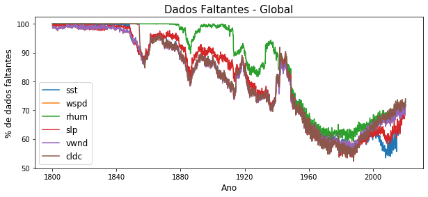
<class 'numpy.ma.core.MaskedArray'>
Legenda:
- sst: Sea Surface Temperature (Temperatura na superfície do mar)
- wspd: Scalar Wind Speed (Velocidade de vento escalar)
- rhum: Relative Humidity (Umidade relativa)
- slp: Sea Level Pressure (Pressão no nível do mar)
- vwnd: V-wind component (Componente V-wind)
- cldc: Cloudiness (Nebulosidade das nuvens)
Como os continentes representam aproximadamente da suferfície terrestre e nossos dados só preenchem os oceanos, os continentes são preenchidos como dados inexistentes. Então naturalmente nossa cota inferior de dados faltantes é essa porcentagem.
Note que os dados lidos vem no formato de "numpy masked array" que tem um atributo "mask" que é indicadora de dado faltante, isso nos ajudará a lidar com esses dados.
Como vemos no plot acima temos várias décadas com níveis de dados faltantes acima de mas vamos analisar focadamente e atlântico norte, que é nossa região de estudos.
sst_at = sst[:,34:40,51:82] #10°-20°N, 80°-20°W
wspd_at = wspd[:,34:40,51:82]
rhum_at = rhum[:,34:40,51:82]
slp_at = slp[:,34:40,51:82]
vwnd_at = vwnd[:,34:40,51:82]
cldc_at = cldc[:,34:40,51:82]
# sst_pac = sst[:,14:45,0:41] #0°-60°N, 100°W-180°W
# wspd_pac = wspd[:,14:45,0:41]
# rhum_pac = rhum[:,14:45,0:41]
missing_at = get_missing([sst_at,wspd_at,rhum_at,slp_at,vwnd_at,cldc_at],['sst_at','wspd_at','rhum_at','slp_at','vwnd_at','cldc_at'])
# missing_pac = get_missing([sst_pac,wspd_pac,rhum_pac],['sst_pac','wspd_pac','rhum_pac'])
# fig,(ax,ax1) = plt.subplots(2,1,figsize=(10,8))
fig,ax = plt.subplots(1,1,figsize=(10,4))
ax.set_title("Dados Faltantes - Atlântico Norte MDR*",fontsize=15)
ax.set_xlabel("Ano",fontsize=12)
ax.set_ylabel("% de dados faltantes",fontsize=12)
for key,value in missing_at.items():
ax.plot(period,missing_at[key],label=key[0:-3])
plt.axvline(x=period[1860],label = "Jan/1955",color = 'black', lw=3,ls='--')
ax.legend(loc='best',fontsize=12);
fig.savefig('../figs/missing_mdr.png')
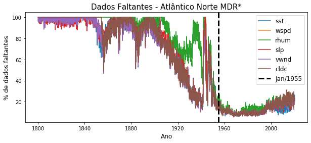
*MDR é a abreviação de Main Development Region ou região central de desenvolvimento dos furacões no Atlântico Norte e se refere à faixa 10°-20°N, 80°-20°W.
Vemos que a partir de 1950-1960, os dados começam a ficar mais completos na região de estudos. Então, para entender a relação as variáveis, iremos trabalhar a partir desta data.
Entretanto, nada nos impede de usar os dados mais antigos, já que as medições não variam muito quando estão perto, se quisermos trabalhar com tendências de longo prazo podemos cortar os dados a partir de 1920, trabalhar com a média das regiões estudadas, mesmo que com de dados faltantes. Isso pois temos a array indicadora, que pode ajudar em modelos, e também essa porcentagem é um pouco mais baixa devido às faixas continentais considaradas no corte de coordenadas.
Abaixo temos um exemplo de como os dados de temperatura estão distribuídos em Janeiro de 1955
Visualização
#Transforms longitude ranges from [0,360] para [-180,180] --> useful for plot
sst[:],lonsn = shiftgrid(180,sst[:],lons,start=False)
wspd[:],lonsn = shiftgrid(180,wspd[:],lons,start=False)
# shum[:],lonsn = shiftgrid(180,shum[:],lons,start=False)
rhum[:],lonsn = shiftgrid(180,rhum[:],lons,start=False)
lons = lonsn
#Reference: https://annefou.github.io/metos_python/04-plotting/
time_index = 1860
fig = plt.figure(figsize=[12,15])
ax = fig.add_subplot(1, 1, 1)
ax.set_title("sst: {}".format(period[time_index].date()),fontsize=16)
map = Basemap(projection='cyl',llcrnrlat=-90,urcrnrlat=90,\
llcrnrlon=-180,urcrnrlon=180,resolution='c', ax=ax)
map.drawcoastlines()
map.fillcontinents(color='#ffe2ab')
map.drawparallels(np.arange(-90.,120.,30.),labels=[1,0,0,0])
map.drawmeridians(np.arange(-180.,180.,60.),labels=[0,0,0,1])
llons, llats = np.meshgrid(lons, lats)
x,y = map(llons,llats)
cmap = c.ListedColormap(['#35978f','#ffffcc','#ffeda0','#fed976','#feb24c','#fd8d3c',
'#fc4e2a','#e31a1c','#bd0026','#800026'])
bounds=list(np.arange(-5,37,1))
# bounds=list(np.arange(10,100,5))
norm = c.BoundaryNorm(bounds, ncolors=cmap.N)
cs = map.contourf(x,y,sst[time_index], cmap=cmap, norm=norm, levels=bounds)
fig.colorbar(cs, cmap=cmap, norm=norm, boundaries=bounds, ticks=bounds, ax=ax, orientation='horizontal');
plt.savefig('../figs/sst_1955.png')
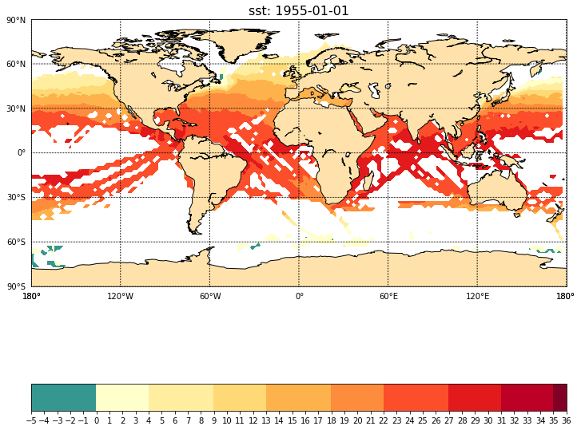
Agregação dos Dados MDR
Criaremos a seguir uma dataframe com as médias espaciais da região MDR, para análise futura com o PDI. Usamos essa média baseados na premissa razoável de que nesse corte espacial da MDR do atlântico os valores não variam muito dentro de um mês. Fazemos essa médias para análises de mais longo prazo como podem ver no notebook do PDI.
print(period[1860]) # -- Jan/1955
def get_mean(data):
size = data.shape[0]
new = np.array([])
for i in range(size):
new = np.append(new,np.mean(data[i,:,:]))
return new
#Começaremos do índice 1788, representando Janeiro de 1949, para corresponder com os dados de PDI.
data_at = pd.DataFrame(get_mean(sst_at[1788:,:,:]),columns =["sst"])
period_df = pd.DataFrame(period[1788:],columns = ["Date"])
period_df['Year']=period_df.Date.map(lambda x: x.year)
period_df['Month']=period_df.Date.map(lambda x: x.month)
data_at['rhum'] = pd.DataFrame(get_mean(rhum_at[1788:,:,:]),columns =["rhum"])
data_at['slp'] = pd.DataFrame(get_mean(slp_at[1788:,:,:]),columns =["slp"])
data_at['wspd'] = pd.DataFrame(get_mean(wspd_at[1788:,:,:]),columns =["wspd"])
data_at['vwnd'] = pd.DataFrame(get_mean(vwnd_at[1788:,:,:]),columns =["vwnd"])
data_at['cldc'] = pd.DataFrame(get_mean(cldc_at[1788:,:,:]),columns =["cldc"])
atlantic_mdr = pd.concat([period_df,data_at],axis=1)
#Código que calcula desvios da temperatura do mar em relação à média histórica
#Apenas para visualização
cum_sum = {}
for i in range(1,13):
cum_sum[i]=0
k=0 #year count
for i in range(0,atlantic_mdr.shape[0]-12):
month = atlantic_mdr.iloc[i,:].Month
if month%12==1:
k+=1
cum_sum[month]+=atlantic_mdr.iloc[i,3]
atlantic_mdr.loc[atlantic_mdr.index[i],'sst_anomaly'] = atlantic_mdr.iloc[i,3]-cum_sum[month]/k
atlantic_mdr.drop('sst_anomaly',axis=1).to_csv('../Datasets/atlantic_mdr.csv',index=False)
atlantic_mdr.iloc[12:24,:]
1955-01-01 00:00:00
| Date | Year | Month | sst | rhum | slp | wspd | vwnd | cldc | sst_anomaly | |
|---|---|---|---|---|---|---|---|---|---|---|
| 12 | 1950-01-01 | 1950 | 1 | 24.782794 | 75.675756 | 1012.699219 | 7.800527 | -2.709708 | 4.139401 | -0.138282 |
| 13 | 1950-02-01 | 1950 | 2 | 24.251776 | 78.633936 | 1012.883875 | 6.583213 | -2.401613 | 3.965875 | -0.129778 |
| 14 | 1950-03-01 | 1950 | 3 | 24.395219 | 78.334148 | 1013.134516 | 6.621354 | -2.062759 | 4.087092 | -0.020090 |
| 15 | 1950-04-01 | 1950 | 4 | 24.900423 | 77.248673 | 1011.096354 | 5.958877 | -0.454326 | 3.146995 | -0.010952 |
| 16 | 1950-05-01 | 1950 | 5 | 25.355377 | 79.638362 | 1010.577563 | 6.486837 | 0.516981 | 4.291411 | -0.061999 |
| 17 | 1950-06-01 | 1950 | 6 | 26.110960 | 81.022388 | 1009.393293 | 6.946026 | 2.076482 | 4.650387 | 0.087756 |
| 18 | 1950-07-01 | 1950 | 7 | 26.516357 | 80.354432 | 1007.978285 | 6.342278 | 2.375750 | 5.184904 | -0.070533 |
| 19 | 1950-08-01 | 1950 | 8 | 27.312561 | 81.914887 | 1007.856950 | 5.279884 | 1.956808 | 5.109233 | -0.081636 |
| 20 | 1950-09-01 | 1950 | 9 | 27.811223 | 80.212305 | 1007.869104 | 4.947030 | 0.525868 | 5.305648 | -0.057075 |
| 21 | 1950-10-01 | 1950 | 10 | 27.702060 | 80.523185 | 1010.697798 | 4.656318 | -1.037250 | 4.423469 | -0.026328 |
| 22 | 1950-11-01 | 1950 | 11 | 27.303333 | 81.614127 | 1009.745018 | 5.103683 | -2.024746 | 3.765682 | 0.058410 |
| 23 | 1950-12-01 | 1950 | 12 | 26.351468 | 77.828336 | 1012.071718 | 5.696333 | -4.750430 | 4.100716 | 0.117639 |
fig,ax = plt.subplots(1,1,figsize=(12,5))
ax.plot(np.arange(1949,2021,1),atlantic_mdr.groupby(['Year']).agg({'sst_anomaly':np.mean})['sst_anomaly'])
ax.set_title("Desvios na temperatura do mar em relação à média histórica",fontsize=14)
ax.set_xlabel("Ano",fontsize=12)
ax.set_ylabel("Desvio da temperatura",fontsize=12);
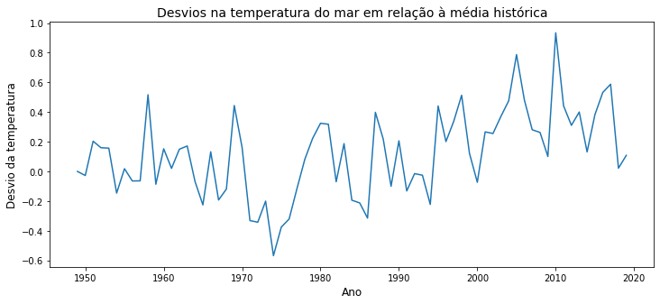
Podemos ver que após 1970-1980 inicia-se uma tendência crescente de aumento de temperatura do mar em relação à média histórica.
corr = atlantic_mdr.corr()
corr.style.background_gradient(cmap='coolwarm')
| Year | Month | sst | rhum | slp | wspd | vwnd | cldc | sst_anomaly | |
|---|---|---|---|---|---|---|---|---|---|
| Year | 1.000000 | -0.010203 | 0.145686 | -0.098235 | 0.048908 | 0.646453 | -0.035567 | 0.241832 | 0.379038 |
| Month | -0.010203 | 1.000000 | 0.762722 | 0.392842 | -0.434216 | -0.385048 | 0.151316 | 0.380311 | -0.017207 |
| sst | 0.145686 | 0.762722 | 1.000000 | 0.635370 | -0.632031 | -0.416486 | 0.432498 | 0.559898 | 0.312656 |
| rhum | -0.098235 | 0.392842 | 0.635370 | 1.000000 | -0.768182 | -0.380635 | 0.803748 | 0.305508 | 0.014696 |
| slp | 0.048908 | -0.434216 | -0.632031 | -0.768182 | 1.000000 | 0.317397 | -0.812037 | -0.548567 | 0.129542 |
| wspd | 0.646453 | -0.385048 | -0.416486 | -0.380635 | 0.317397 | 1.000000 | -0.253309 | 0.007404 | 0.040588 |
| vwnd | -0.035567 | 0.151316 | 0.432498 | 0.803748 | -0.812037 | -0.253309 | 1.000000 | 0.236100 | -0.002599 |
| cldc | 0.241832 | 0.380311 | 0.559898 | 0.305508 | -0.548567 | 0.007404 | 0.236100 | 1.000000 | 0.019122 |
| sst_anomaly | 0.379038 | -0.017207 | 0.312656 | 0.014696 | 0.129542 | 0.040588 | -0.002599 | 0.019122 | 1.000000 |
Alguma correlações fortes interessantes:
- Temperatura do mar (sst) com ano (Year)
- Temperatura do mar (sst) e umidade (rhum)
- Velocidade de vento (wspd) e ano (Year)
- Pressão (slp) e Umidade (rhum)
Análises mais aprofundadas dessas variáveis veremos no notebook de análise do PDI.
month_sst = atlantic_mdr.groupby('Month')['sst'].mean()
month_rhum = atlantic_mdr.groupby('Month')['rhum'].mean()
# month_slp = atlantic_mdr.groupby('Month')['slp'].mean()
# month_cldc = atlantic_mdr.groupby('Month')['cldc'].mean()
m = np.arange(1,13)
fig,ax = plt.subplots(1,1,figsize=(9,5))
ax.plot(month_sst,lw=3.5,color='blue',label = 'sst')
ax.set_xticks(m);
ax.set_xlabel("Mês",fontsize=14)
ax.set_ylabel("Média Histórica - SST",fontsize=14)
ax2 = ax.twinx()
ax2.plot(month_rhum,lw=3.5,color='orange',label = 'rhum')
ax2.set_ylabel("Média Histórica - Umidade",fontsize=14)
ax.legend(loc='best',fontsize=14);
ax2.legend(loc='upper left',fontsize=14);
plt.savefig("../figs/mensal_sst_rhum.jpg")
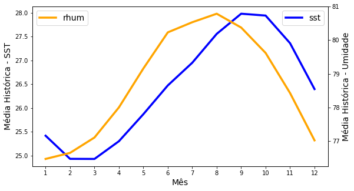
Veja acima que os picos de temperatura e umidade, coincidem razoavelmente com a temporada de furacões.
month_slp = atlantic_mdr.groupby('Month')['slp'].mean()
month_cldc = atlantic_mdr.groupby('Month')['cldc'].mean()
m = np.arange(1,13)
fig,ax = plt.subplots(1,1,figsize=(9,5))
ax.plot(month_slp,lw=3.5,color='blue',label = 'slp')
ax.set_xticks(m);
ax.set_xlabel("Mês",fontsize=14)
ax.set_ylabel("Média Histórica - Pressão",fontsize=14)
ax2 = ax.twinx()
ax2.plot(month_cldc,lw=3.5,color='orange',label = 'cldc')
ax2.set_ylabel("Média Histórica - Nebulosidade",fontsize=14)
ax.legend(loc='best',fontsize=14);
ax2.legend(loc='lower left',fontsize=14);
plt.savefig("../figs/mensal_slp_cldc.jpg")
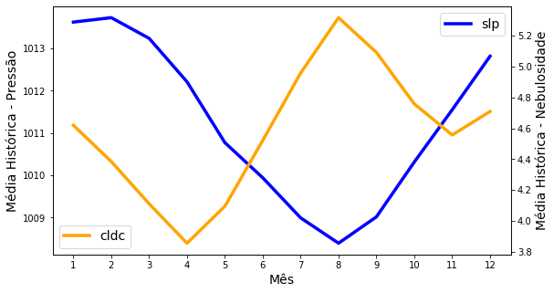
O pico de nebulosidade das nuvens também coincide de forma razoável com a temporada de furacões. Assim como os valores mais baixos de pressão. Essas características estão relacionadas com a formação do evento de tempestade forte ou furacão.
Dataset HURDAT2 (Hurricane) - Análise e Limpeza
Passemos agora a analisar os dados de tempestades e furacões.
# O foco principal do trabalho se dará nos dados do atlântico
data_atl = pd.read_csv('../Datasets/atlantic.csv',parse_dates=['Date'])
data_atl.dtypes
ID object
Name object
Date datetime64[ns]
Time int64
Event object
Status object
Latitude object
Longitude object
Maximum Wind int64
Minimum Pressure int64
Low Wind NE int64
Low Wind SE int64
Low Wind SW int64
Low Wind NW int64
Moderate Wind NE int64
Moderate Wind SE int64
Moderate Wind SW int64
Moderate Wind NW int64
High Wind NE int64
High Wind SE int64
High Wind SW int64
High Wind NW int64
dtype: object
# formatando dados de data
data_atl['Year'] = pd.DatetimeIndex(data_atl['Date']).year
data_atl['Month'] = pd.DatetimeIndex(data_atl['Date']).month
data_atl['Day'] = pd.DatetimeIndex(data_atl['Date']).day
print(data_atl.columns)
data_atl.head()
Index(['ID', 'Name', 'Date', 'Time', 'Event', 'Status', 'Latitude',
'Longitude', 'Maximum Wind', 'Minimum Pressure', 'Low Wind NE',
'Low Wind SE', 'Low Wind SW', 'Low Wind NW', 'Moderate Wind NE',
'Moderate Wind SE', 'Moderate Wind SW', 'Moderate Wind NW',
'High Wind NE', 'High Wind SE', 'High Wind SW', 'High Wind NW', 'Year',
'Month', 'Day'],
dtype='object')
| ID | Name | Date | Time | Event | Status | Latitude | Longitude | Maximum Wind | Minimum Pressure | ... | Moderate Wind SE | Moderate Wind SW | Moderate Wind NW | High Wind NE | High Wind SE | High Wind SW | High Wind NW | Year | Month | Day | |
|---|---|---|---|---|---|---|---|---|---|---|---|---|---|---|---|---|---|---|---|---|---|
| 0 | AL011851 | UNNAMED | 1851-06-25 | 0 | HU | 28.0N | 94.8W | 80 | -999 | ... | -999 | -999 | -999 | -999 | -999 | -999 | -999 | 1851 | 6 | 25 | |
| 1 | AL011851 | UNNAMED | 1851-06-25 | 600 | HU | 28.0N | 95.4W | 80 | -999 | ... | -999 | -999 | -999 | -999 | -999 | -999 | -999 | 1851 | 6 | 25 | |
| 2 | AL011851 | UNNAMED | 1851-06-25 | 1200 | HU | 28.0N | 96.0W | 80 | -999 | ... | -999 | -999 | -999 | -999 | -999 | -999 | -999 | 1851 | 6 | 25 | |
| 3 | AL011851 | UNNAMED | 1851-06-25 | 1800 | HU | 28.1N | 96.5W | 80 | -999 | ... | -999 | -999 | -999 | -999 | -999 | -999 | -999 | 1851 | 6 | 25 | |
| 4 | AL011851 | UNNAMED | 1851-06-25 | 2100 | L | HU | 28.2N | 96.8W | 80 | -999 | ... | -999 | -999 | -999 | -999 | -999 | -999 | -999 | 1851 | 6 | 25 |
5 rows × 25 columns
# Registro de Furacões é maior em determinada época do ano
print(data_atl.groupby(['Month'])['ID'].count())
Month
1 132
2 13
3 14
4 81
5 655
6 2349
7 3262
8 10857
9 18926
10 9802
11 2548
12 466
Name: ID, dtype: int64
fig, ax = plt.subplots(1,1)#, figsize=(16,10))
fig.suptitle('Número de furações registrados por mês do ano', fontsize=28, y=1.06)
ax.bar(data_atl.groupby(['Month'])['Month'].mean(), data_atl.groupby(['Month'])['ID'].count(), ls = '--')
ax.tick_params(labelsize=24)
ax.set_title(f'Número de registros (1851-2015)', fontsize=24)
ax.set_xlabel(r'$Mês$', fontsize=16)
ax.set_ylabel(r'$Quantidade$', fontsize=16)
# ax.legend(loc='best', fontsize=12);
fig.set_figheight(5)
fig.set_figwidth(20)
fig.tight_layout(pad=2.0)
plt.savefig("../figs/furacoes_mes.jpg")
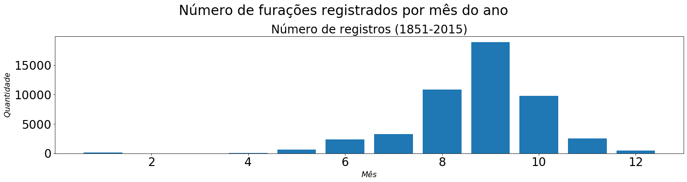
Período de furacões se concentra entre os meses de julho e novembro. Isso deve estar relacionado com o período anterior (verão do hemisfério norte, onde acontece o maior número de casos) O aquecimento das águas está intimamente ligado com a formação das massas de ar que ocasionam os furacões Isso nos dá uma pista da forma de correlação temporal que devemos buscar para predizer os eventos
## Formatação dos dados para plot pressao x vento
data_atl_ext = data_atl.copy()
data_atl_mwmp = data_atl.copy()
data_atl_mw = data_atl.copy()
ind_nan_ext = []
ind_nan_mwmp = []
ind_nan_mw = []
for l in range(len(data_atl)):
if (data_atl_mw['Maximum Wind'][l] < 0):
ind_nan_mw.append(l)
ind_nan_mwmp.append(l)
ind_nan_ext.append(l)
elif (data_atl_mwmp['Minimum Pressure'][l] < 0):
ind_nan_mwmp.append(l)
ind_nan_ext.append(l)
elif (min(data_atl_ext['Low Wind NE'][l], data_atl_ext['Low Wind SE'][l],
data_atl_ext['Low Wind SW'][l], data_atl_ext['Low Wind NW'][l],
data_atl_ext['Moderate Wind NE'][l], data_atl_ext['Moderate Wind SE'][l],
data_atl_ext['Moderate Wind SW'][l], data_atl_ext['Moderate Wind NW'][l],
data_atl_ext['High Wind NE'][l], data_atl_ext['High Wind SE'][l],
data_atl_ext['High Wind SW'][l], data_atl_ext['High Wind NW'][l]) < 0):
ind_nan_ext.append(l)
data_atl_ext = data_atl_ext.drop(ind_nan_ext, 0)
data_atl_mwmp = data_atl_mwmp.drop(ind_nan_mwmp, 0)
data_atl_mw = data_atl_mw.drop(ind_nan_mw, 0)
print(len(data_atl_ext))
print(len(data_atl_mwmp))
print(len(data_atl_mw))
---------------------------------------------------------------------------
NameError Traceback (most recent call last)
<ipython-input-3-754270ff204f> in <module>
1 ## Formatação dos dados para plot pressao x vento
----> 2 data_atl_ext = data_atl.copy()
3 data_atl_mwmp = data_atl.copy()
4 data_atl_mw = data_atl.copy()
5
NameError: name 'data_atl' is not defined
fig, ax = plt.subplots(1,1)#, figsize=(16,10))
#fig.suptitle('Velocidade Máxima vs Pressão Mínima (1851-2015)', fontsize=28, y=1.06)
ax.scatter(data_atl_mwmp['Minimum Pressure'], data_atl_mwmp['Maximum Wind'], alpha = 0.2, ls = '--') #, label=r'$Furacões$ $=$ $0$')
ax.tick_params(labelsize=24)
ax.set_title(f'Velocidade Máxima vs Pressão Mínima (1851-2015)', fontsize=24)
ax.set_xlabel(r'$Pressão Mínima$', fontsize=16)
ax.set_ylabel(r'$Velocidade Máxima$', fontsize=16)
# ax.legend(loc='best', fontsize=12);
fig.set_figheight(5)
fig.set_figwidth(20)
fig.tight_layout(pad=2.0)
plt.savefig('../figs/pressaoMin_Velo_max.jpg')
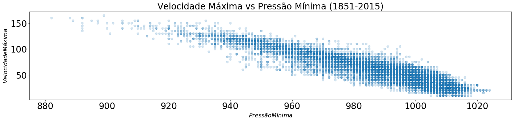
Abaixo formatamos as Latitudes e Longitudes para remover os terminadores W, E, N e S. Como indicador de hemisfério, usamos sinal negativo para sul e oeste e positovo para norte e leste. Precisaremos que esses dados sejam numericos para aplicações futuras e não textuais.
data_atl[['Latitude','Longitude']].dtypes
Latitude object
Longitude object
dtype: object
data_atl.Latitude = data_atl.Latitude.apply(lambda x: -float(x.rstrip("S")) if x.endswith("S") else float(x.rstrip("N")))
data_atl.Longitude = data_atl.Longitude.apply(lambda x: -float(x.rstrip("W")) if x.endswith("W") else float(x.rstrip("E")))
data_atl[['Latitude','Longitude']].describe()
| Latitude | Longitude | |
|---|---|---|
| count | 49105.000000 | 49105.000000 |
| mean | 27.044904 | -65.682533 |
| std | 10.077880 | 19.687240 |
| min | 7.200000 | -359.100000 |
| 25% | 19.100000 | -81.000000 |
| 50% | 26.400000 | -68.000000 |
| 75% | 33.100000 | -52.500000 |
| max | 81.000000 | 63.000000 |
X_train = data_atl.groupby(['Year'])['Year'].mean()
y_train = data_atl.groupby(['Year'])['ID'].count()
X_train2 = sm.add_constant(X_train) #np.array(X_train).reshape(X_train.shape[0],1)
OLS_obj = OLS(y_train, X_train2)
OLSModel = OLS_obj.fit()
r2_train = OLSModel.rsquared
print(f'R^2_train = {r2_train}')
#print(f'R^2_test = {r2_test}')
print(f'Parâmetro_const = {OLSModel.params[0]}')
print(f'Parâmetro_Year = {OLSModel.params[1]}')
w0 = OLSModel.params[0] + 1850*OLSModel.params[1]
w1 = OLSModel.params[0] + 2015*OLSModel.params[1]
fig, ax = plt.subplots(1,1)#, figsize=(16,10))
ax.plot(data_atl.groupby(['Year'])['ID'].count(), ls = '--')
ax.plot([1850, 2015], [w0, w1], ls = '-.')
ax.tick_params(labelsize=24)
ax.set_title(f'Número de Furacões Anuais (1851-2015)', fontsize=24)
ax.set_xlabel(r'$Ano$', fontsize=16)
ax.set_ylabel(r'$Quantidade$', fontsize=16)
# ax.legend(loc='best', fontsize=12);
fig.set_figheight(5)
fig.set_figwidth(20)
fig.tight_layout(pad=2.0)
plt.savefig('../figs/numero_furacoes1851-2015.jpg')
R^2_train = 0.40918060978409
Parâmetro_const = -3940.349139351199
Parâmetro_Year = 2.192423797184304
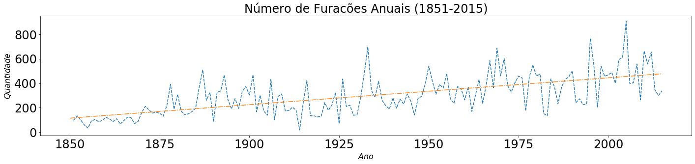
Vemos acima que o número de registro de furações tem crescido desde 1850, mas isso se deve à maior capacidade de detecção com o passar dos anos.
X_train = data_atl_mw.groupby(['Year'])['Year'].mean()
y_train = data_atl_mw.groupby(['Year'])['Maximum Wind'].mean()
X_train2 = sm.add_constant(X_train)
OLS_obj = OLS(y_train, X_train2)
OLSModel = OLS_obj.fit()
r2_train = OLSModel.rsquared
print(f'R^2_train = {r2_train}')
print(f'Parâmetro_const = {OLSModel.params[0]}')
print(f'Parâmetro_Year = {OLSModel.params[1]}')
w0 = OLSModel.params[0] + 1850*OLSModel.params[1]
w1 = OLSModel.params[0] + 2015*OLSModel.params[1]
fig, ax = plt.subplots(1,1)#, figsize=(16,10))
ax.plot(data_atl_mw.groupby(['Year'])['Year'].mean(), data_atl_mw.groupby(['Year'])['Maximum Wind'].mean(), ls = '--')
ax.plot([1850, 2015], [w0, w1], ls = '-.')
ax.tick_params(labelsize=24)
ax.set_title(f'Velocidade Máxima vs Ano (1851-2015)', fontsize=24)
ax.set_xlabel(r'$Ano$', fontsize=16)
ax.set_ylabel(r'$Velocidade Máxima$', fontsize=16)
fig.set_figheight(5)
fig.set_figwidth(20)
fig.tight_layout(pad=2.0)
plt.savefig('../figs/maxwind_1851-2015.jpg')
R^2_train = 0.49772308255924613
Parâmetro_const = 345.3529584491673
Parâmetro_Year = -0.15025433346159078
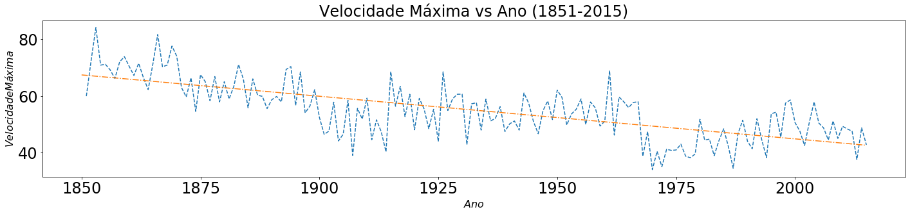
Vemos também que a velocidade máxima de vento sustentada pelos furacões reduziu, mas isso também se deve à maior capacidade de registro de eventos de pequeno porte, que acabam pesando a média para baixo. Assim, para não enviesar nossos dados, filtraremos os registros de pequeno porte; Consideramos apenas tempestades cuja duração em dias é maior que 2, e cuja classificação na escala Saffir-Simpson seja no mínimo Tempestade Tropical.
Para essa classificação, a velocidade máxima sustentada de vento deve ultrapassar 63km/h o que equivale a 34 knots (milhas náuticas).
#Filtro de Duração
data_atl_fdur = data_atl_mw.copy()
duration = data_atl_mw.groupby(['ID'])['Date'].max()-data_atl_mw.groupby(['ID'])['Date'].min()
duration.name = 'Duration'
#print(duration)
data_atl_fdur = pd.merge(data_atl_fdur, duration, how='inner', left_on='ID', right_index=True)
data_atl_fdur['Duration'] = pd.to_numeric(data_atl_fdur['Duration'].dt.days, downcast='integer')
data_atl_fdur = data_atl_fdur[data_atl_fdur['Duration'] > 2]
print(len(data_atl_fdur))
46350
#Filtro de Max_Windspeed
data_atl_fwind = data_atl_fdur.copy()
data_atl_fwind = data_atl_fwind[data_atl_fwind['Maximum Wind'] > 34]
print(len(data_atl_fwind))
35696
Vejamos os novos plots com os dados filtrados:
# Com o novo filtro, o viés do aumento no número de furacões ao longo dos anos reduziu, mas ainda há um aumento
# Isso mostra que essa tendência pode ser algo não viesada, e que gera preocupação pelo futuro
X_train = data_atl_fwind.groupby(['Year'])['Year'].mean()
y_train = data_atl_fwind.groupby(['Year'])['ID'].count()
X_train2 = sm.add_constant(X_train)
OLS_obj = OLS(y_train, X_train2)
OLSModel = OLS_obj.fit()
r2_train = OLSModel.rsquared
print(f'R^2_train = {r2_train}')
#print(f'R^2_test = {r2_test}')
print(f'Parâmetro_const = {OLSModel.params[0]}')
print(f'Parâmetro_Year = {OLSModel.params[1]}')
w0 = OLSModel.params[0] + 1850*OLSModel.params[1]
w1 = OLSModel.params[0] + 2015*OLSModel.params[1]
fig, ax = plt.subplots(1,1)
ax.plot(data_atl_fwind.groupby(['Year'])['ID'].count(), ls = '--')
ax.plot([1850, 2015], [w0, w1], ls = '-.')
ax.tick_params(labelsize=24)
ax.set_title(f'Número de Furacões Anuais (1851-2015)', fontsize=24)
ax.set_xlabel(r'$Ano$', fontsize=16)
ax.set_ylabel(r'$Quantidade$', fontsize=16)
fig.set_figheight(5)
fig.set_figwidth(20)
fig.tight_layout(pad=2.0)
plt.savefig('../figs/filtered_numero_furacoes1851-2015.jpg')
R^2_train = 0.15573477903937427
Parâmetro_const = -1661.4327723310091
Parâmetro_Year = 0.9714289530628057
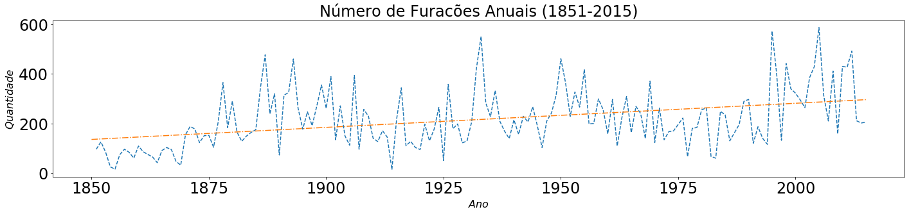
X_train = data_atl_fwind.groupby(['Year'])['Year'].mean()
y_train = data_atl_fwind.groupby(['Year'])['Maximum Wind'].mean()
X_train2 = sm.add_constant(X_train) #np.array(X_train).reshape(X_train.shape[0],1)
OLS_obj = OLS(y_train, X_train2)
OLSModel = OLS_obj.fit()
r2_train = OLSModel.rsquared
print(f'R^2_train = {r2_train}')
#print(f'R^2_test = {r2_test}')
print(f'Parâmetro_const = {OLSModel.params[0]}')
print(f'Parâmetro_Year = {OLSModel.params[1]}')
w0 = OLSModel.params[0] + 1850*OLSModel.params[1]
w1 = OLSModel.params[0] + 2015*OLSModel.params[1]
fig, ax = plt.subplots(1,1)#, figsize=(16,10))
ax.plot(data_atl_fwind.groupby(['Year'])['Year'].mean(), data_atl_fwind.groupby(['Year'])['Maximum Wind'].mean(), ls = '--')
ax.plot([1850, 2015], [w0, w1], ls = '-.') #, label=r'$Furacões$ $=$ $0$')
ax.tick_params(labelsize=24)
ax.set_title(f'Velocidade Máxima vs Ano (1851-2015)', fontsize=24)
ax.set_xlabel(r'$Ano$', fontsize=16)
ax.set_ylabel(r'$Velocidade Máxima$', fontsize=16)
fig.set_figheight(5)
fig.set_figwidth(20)
fig.tight_layout(pad=2.0)
plt.savefig('../figs/filtered_maxwind_1851-2015.jpg')
R^2_train = 0.11158706746149893
Parâmetro_const = 167.44362825887208
Parâmetro_Year = -0.05470982174808241
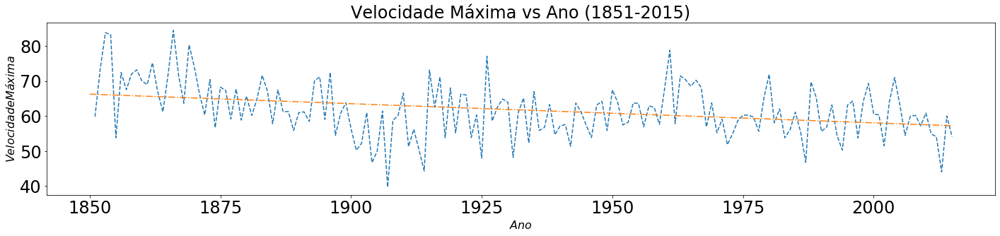
Com o novo filtro, o viés da redução da velocidade máxima sustentada de vento reduziu, quase para o nível constante Isso pode significar que os filtros estão relativamente bem adequados para retirada do viés inicial dos dados.
Geraremos então um novo DataFrame com algums filtros importantes:
- Velocidade Máxima Sustentada > 34 milhas náuticas
- Duração > 2 dias
- Furacões a partir de 1950 (quando a capacidade de medição começa a evoluir
O código abaixo aplica esses filtros.
data_atl_mw2 = data_atl.copy()
data_atl_mw2_filtrado3 = data_atl_mw2.copy()
Lat_min = data_atl_mw2_filtrado3.groupby(['ID'])['Latitude'].first()
Lat_min.name = 'Lat_min'
data_atl_mw2_filtrado3 = pd.merge(data_atl_mw2_filtrado3, Lat_min, how='inner', left_on='ID', right_index=True)
data_atl_mw2_filtrado3 = data_atl_mw2_filtrado3[abs(data_atl_mw2_filtrado3['Lat_min'] - 12.5) > 0]
Lon_min = data_atl_mw2_filtrado3.groupby(['ID'])['Longitude'].min()
Lon_min.name = 'Lon_min'
data_atl_mw2_filtrado3 = pd.merge(data_atl_mw2_filtrado3, Lon_min, how='inner', left_on='ID', right_index=True)
#print(data_atl_mw2_filtrado3)
data_atl_mw2_filtrado3 = data_atl_mw2_filtrado3[data_atl_mw2_filtrado3['Lon_min'] > -180]
Wind_max = data_atl_mw2_filtrado3.groupby(['ID'])['Maximum Wind'].max()
Wind_max.name = 'Wind_max'
#print(Wind_max)
data_atl_mw2_filtrado3 = pd.merge(data_atl_mw2_filtrado3, Wind_max, how='inner', on='ID')#left_on='ID', right_index=True)
#print(data_atl_mw2_filtrado3)
data_atl_mw2_filtrado3 = data_atl_mw2_filtrado3[data_atl_mw2_filtrado3['Wind_max'] > 34]
data_atl_mw2_filtrado3 = data_atl_mw2_filtrado3[data_atl_mw2_filtrado3['Year'] > 1950]
duration = data_atl_mw2_filtrado3.groupby(['ID'])['Date'].max()-data_atl_mw2_filtrado3.groupby(['ID'])['Date'].min()
duration.name = 'Duration'
#print(duration)
data_atl_mw2_filtrado3 = pd.merge(data_atl_mw2_filtrado3, duration, how='inner', left_on='ID', right_index=True)
data_atl_mw2_filtrado3['Duration'] = pd.to_numeric(data_atl_mw2_filtrado3['Duration'].dt.days, downcast='integer')
data_atl_mw2_filtrado3 = data_atl_mw2_filtrado3[data_atl_mw2_filtrado3['Duration'] > 2]
data_atl_mw2_filtrado3 = data_atl_mw2_filtrado3.drop(['Lat_min', 'Lon_min', 'Wind_max'], 1)
#data_atl_mw2_filtrado3.head()
print(len(data_atl_mw2_filtrado3))
print(len(data_atl.groupby(['ID'])['ID'].count()))
print(len(data_atl_mw2_filtrado3.groupby(['ID'])['ID'].count()))
print(len(data_atl))
print(len(data_atl_mw2))
data_atl_mw2_filtrado3.head()
22386
1814
685
49105
49105
| ID | Name | Date | Time | Event | Status | Latitude | Longitude | Maximum Wind | Minimum Pressure | ... | Moderate Wind SW | Moderate Wind NW | High Wind NE | High Wind SE | High Wind SW | High Wind NW | Year | Month | Day | Duration | |
|---|---|---|---|---|---|---|---|---|---|---|---|---|---|---|---|---|---|---|---|---|---|
| 21948 | AL011951 | UNNAMED | 1951-01-02 | 1200 | EX | 30.5 | -58.0 | 50 | -999 | ... | -999 | -999 | -999 | -999 | -999 | -999 | 1951 | 1 | 2 | 10 | |
| 21949 | AL011951 | UNNAMED | 1951-01-02 | 1800 | EX | 29.9 | -56.8 | 45 | -999 | ... | -999 | -999 | -999 | -999 | -999 | -999 | 1951 | 1 | 2 | 10 | |
| 21950 | AL011951 | UNNAMED | 1951-01-03 | 0 | EX | 29.0 | -55.7 | 45 | -999 | ... | -999 | -999 | -999 | -999 | -999 | -999 | 1951 | 1 | 3 | 10 | |
| 21951 | AL011951 | UNNAMED | 1951-01-03 | 600 | EX | 27.5 | -54.8 | 45 | -999 | ... | -999 | -999 | -999 | -999 | -999 | -999 | 1951 | 1 | 3 | 10 | |
| 21952 | AL011951 | UNNAMED | 1951-01-03 | 1200 | EX | 26.5 | -54.5 | 45 | -999 | ... | -999 | -999 | -999 | -999 | -999 | -999 | 1951 | 1 | 3 | 10 |
5 rows × 26 columns
Uma limpeza final será feita nas entradas de texto:
df = data_atl_mw2_filtrado3.copy()
np.unique(df.Name)[0:5],np.unique(df.Event),np.unique(df.Status)
(array([' AMY', ' ANA',
' BOB', ' DOG',
' DON'], dtype=object),
array([' ', ' C', ' G', ' I', ' L', ' P', ' R', ' S', ' T', ' W'],
dtype=object),
array([' DB', ' EX', ' HU', ' LO', ' SD', ' SS', ' TD', ' TS', ' WV'],
dtype=object))
Veja que as entradas estão espaçadas, abaixo corrigimos isso:
df['Name'] = df['Name'].apply(lambda x: x.strip())
df['Event'] = df['Event'].apply(lambda x: x.strip())
df['Status'] = df['Status'].apply(lambda x: x.strip())
np.unique(df.Name)[0:5],np.unique(df.Event),np.unique(df.Status)
(array(['ABBY', 'ABLE', 'AGNES', 'ALBERTO', 'ALEX'], dtype=object),
array(['', 'C', 'G', 'I', 'L', 'P', 'R', 'S', 'T', 'W'], dtype=object),
array(['DB', 'EX', 'HU', 'LO', 'SD', 'SS', 'TD', 'TS', 'WV'], dtype=object))
#Salvando em csv
data_atl_mw2_filtrado3 = df.copy()
data_atl_mw2_filtrado3.to_csv('../Datasets/data_atl_mw2_filtrado3.csv', encoding='utf-8', index=False)
União dos dados via k-NN ponderado
Abaixo vamos gerar um novo dataframe que pegará o filtrado3.csv gerado acima e buscará os dados climáticos nos datasets da ICOADS diretamente dos arquivos .nc. Faremos essa busca via coordenadas e para lidar com dados faltantes implementaremos um k-NN ponderado pelo inverso das distâncias entre as coordenadas originais e o vizinho considerado no algoritmo.
Leitura dos dados e limpezas adicionais
df = pd.read_csv('../Datasets/data_atl_mw2_filtrado3.csv',parse_dates=['Date'])
df.dtypes
ID object
Name object
Date datetime64[ns]
Time int64
Event object
Status object
Latitude float64
Longitude float64
Maximum Wind int64
Minimum Pressure int64
Low Wind NE int64
Low Wind SE int64
Low Wind SW int64
Low Wind NW int64
Moderate Wind NE int64
Moderate Wind SE int64
Moderate Wind SW int64
Moderate Wind NW int64
High Wind NE int64
High Wind SE int64
High Wind SW int64
High Wind NW int64
Year int64
Month int64
Day int64
Duration int64
dtype: object
pd.DataFrame(zip(df.columns,
[np.sum(df[x] == -999)/len(df) for x in df.columns])
,columns = ['Variable','Missing Ratio'])
| Variable | Missing Ratio | |
|---|---|---|
| 0 | ID | 0.000000 |
| 1 | Name | 0.000000 |
| 2 | Date | 0.000000 |
| 3 | Time | 0.000000 |
| 4 | Event | 0.000000 |
| 5 | Status | 0.000000 |
| 6 | Latitude | 0.000000 |
| 7 | Longitude | 0.000000 |
| 8 | Maximum Wind | 0.000000 |
| 9 | Minimum Pressure | 0.256723 |
| 10 | Low Wind NE | 0.750201 |
| 11 | Low Wind SE | 0.750201 |
| 12 | Low Wind SW | 0.750201 |
| 13 | Low Wind NW | 0.750201 |
| 14 | Moderate Wind NE | 0.750201 |
| 15 | Moderate Wind SE | 0.750201 |
| 16 | Moderate Wind SW | 0.750201 |
| 17 | Moderate Wind NW | 0.750201 |
| 18 | High Wind NE | 0.750201 |
| 19 | High Wind SE | 0.750201 |
| 20 | High Wind SW | 0.750201 |
| 21 | High Wind NW | 0.750201 |
| 22 | Year | 0.000000 |
| 23 | Month | 0.000000 |
| 24 | Day | 0.000000 |
| 25 | Duration | 0.000000 |
Removeremos as colunas abaixo, pois não utilizaremos nas análises e são muitos esparsas
df = df.drop(['Low Wind NE',
'Low Wind SE', 'Low Wind SW', 'Low Wind NW', 'Moderate Wind NE',
'Moderate Wind SE', 'Moderate Wind SW', 'Moderate Wind NW',
'High Wind NE', 'High Wind SE', 'High Wind SW', 'High Wind NW'],axis = 1)
Na célula abaixo, lemos os dados climáticos e os salvamos en variáveis para uso futuro.
sst_mean = nc.Dataset('sst.mean.nc','r')
rhum_mean = nc.Dataset('rhum.mean.nc','r')
wspd_mean = nc.Dataset('wspd.mean.nc','r')
slp_mean = nc.Dataset('slp.mean.nc','r')
# vwnd_mean = nc.Dataset('Datasets/vwnd.mean.nc','r')
# Resolvemos não considerar o vwnd por ser ruído
cldc_mean = nc.Dataset("cldc.mean.nc",'r')
lats = sst_mean.variables['lat'][:]
lons = sst_mean.variables['lon'][:]
time = sst_mean.variables['time'][:]
lons = [x-180 for x in lons]
lats = [x for x in lats]
sst = sst_mean.variables['sst'][:,:,:]
rhum = rhum_mean.variables['rhum'][:,:,:]
wspd = wspd_mean.variables['wspd'][:,:,:]
slp = slp_mean.variables['slp'][:,:,:]
cldc = cldc_mean.variables['cldc'][:,:,:]
sst_mean.close()
wspd_mean.close()
rhum_mean.close()
slp_mean.close()
cldc_mean.close()
Formula da distância
Dados duas coordenadas e ( em radianos, a Fórmula Haversine é capaz de calcular a distância real entre esses dois pontos no mapa:

Onde é o raio da Terra.
Usando aproximadamente igual a km o valor de será a distância em km dos dois pontos dados em coordenadas geográficas.
Abaixo, seguimos uma implementação equivalente obtida no Stack Overflow.
def distance(lat1,lon1,lat2,lon2):
# approximate radius of earth in km
R = 6371.0
lat1 = radians(lat1)
lon1 = radians(lon1)
lat2 = radians(lat2)
lon2 = radians(lon2)
dlon = lon2 - lon1
dlat = lat2 - lat1
a = sin(dlat / 2)**2 + cos(lat1) * cos(lat2) * sin(dlon / 2)**2
c = 2 * atan2(sqrt(a), sqrt(1 - a))
if R*c==0:
return 0.000000001 #Handling Zero Division problems
else:
return R * c
k-NN ponderado por inverso da distância
Abaixo segue a implementação de algumas funções auxiliares para realizar esse preenchimento de dados almejado. o que queremos é dos dados que filtramos do HURDAT, para cada linha, usando as coordenadas geográficas, gerar novas colunas contendo os dados do ICOADS para aquela data espefícica e aquela coordenada específica.
Por conta de dados faltantes no ICOADS, nem sempre existirá registros para todas as coordenadas. Assim, buscamos os vizinhos mais próximos a calculamos a média entre eles, porém a média é ponderada pelo inverso da distância entre o vizinho e a coordenada original (usando a Fórmula Haversive). Sendo assim, pontos mais distantes terão menor peso na média, enquanto pontos mais próximos serão considerados mais importantes.
Por simplicidade, usamos .
Funcionamento das funções:
- get_coords: recebe uma coordenada e a lista de coordenadas disponíveis no ICOADS. Retorna uma coordenada que existe na lista passada. Precisamos dessa função pois os dados de coordenadas do ICOADS são intervalados 2 a 2.
- get_neighboors: recebe uma data, latitude, longitude, uma array de dados do ICOADS e a quantidade de vizinhos a buscar. Retorna uma lista de vizinhos e uma lista de distâncias em kilometros.
- get_data: usa as funções acima para gerar a média ponderada pelo inverso da distância
- get_data_df: aplica as funções acima para gerar uma nova coluna nos dados HURDAT2 da forma como almejado inicialmente.
def get_coord(coord,l):
if int(coord) in l:
return int(coord)
elif int(coord)+1 in l:
return int(coord)+1
elif int(coord)-1 in l:
return int(coord)-1
elif int(coord)+2 in l:
return int(coord)+2
elif int(coord)-2 in l:
return int(coord)-2
def get_neighboors(t,lat,lon,marray,k):
nb = []
dist = []
lat_data = get_coord(lat,lats) #nearest lat in our lats list
lon_data = get_coord(lon,lons)
lat_i = lats.index(lat_data)
lon_i = lons.index(lon_data)
if marray[t,lat_i,lon_i]:
nb.append(marray[t,lat_i,lon_i])
dist.append(distance(lat,lon,lat_data,lon_data))
j=1
while len(nb)<k:
lower_i = (lat_i-j)#%90
upper_i = (lat_i+j)#%90
right_i = (lon_i+j)#%180
left_i = (lon_i-j)#%180
# if right_i>=len()
left_values = marray[t,lower_i:upper_i,left_i]
upper_values = marray[t,upper_i,left_i:right_i]
right_values = marray[t,upper_i:lower_i:-1,right_i]
lower_values = marray[t,lower_i,right_i:left_i:-1]
[nb.append(x) for x in left_values if x]
[dist.append(distance(lat,lon,lats[i],lons[left_i])) for i in range(len(left_values)) if left_values[i]]
if len(nb)>=k:
break
[nb.append(x) for x in upper_values if x]
[dist.append(distance(lat,lon,lats[upper_i],lons[i])) for i in range(len(upper_values)) if upper_values[i]]
if len(nb)>=k:
break
[nb.append(x) for x in right_values if x]
[dist.append(distance(lat,lon,lats[i],lons[right_i])) for i in range(len(right_values)) if right_values[i]]
if len(nb)>=k:
break
[nb.append(x) for x in lower_values if x]
[dist.append(distance(lat,lon,lats[lower_i],lons[i])) for i in range(len(lower_values)) if lower_values[i]]
if len(nb)>=k:
break
j+=1
if prob!=[]:
print(prob)
return nb,dist
period = pd.date_range(start = "1800-01-01",end = "2020-07-01", freq = "MS").to_pydatetime().tolist()
def get_data(datetime,lat,lon,dataset,k):#k is the number of neighboors
year = datetime.year
month = datetime.month
time_index = period.index(dt.datetime(year, month, 1, 0, 0))
nb,dist = get_neighboors(time_index,lat,lon,dataset,k)
inv_dist = [1/x for x in dist]
return sum(nb[i]*inv_dist[i] for i in range(len(nb)))/sum(inv_dist)
def get_data_df(df,dataset,label,k=15):
output = pd.DataFrame(np.zeros([len(df),1]),columns = [label])
for i in range(len(df)):
output.loc[i,label] = get_data(df.Date[i],df.Latitude[i],df.Longitude[i],dataset,k)
return output
Abaixo executamos tudo que foi implementado acima para gerar o novo dataframe. Salvamos em um novo csv que usaremos nas próximas análises.
%%time
# Esta célula demora um pouco a ser executada; Todos essas dados já estão salvos em data_atl_merged2.csv
df.loc[:,'sst']=get_data_df(df,sst,'sst')
print("OK -- sst")
df.loc[:,'rhum']=get_data_df(df,rhum,'rhum')
print("OK -- rhum")
df.loc[:,'wspd']=get_data_df(df,rhum,'wspd')
print("OK -- wspd")
df.loc[:,'slp']=get_data_df(df,slp,'slp')
print("OK -- slp")
df.loc[:,'cldc']=get_data_df(df,cldc,'cldc')
print("OK -- cldc\n")
df.columns
OK -- sst
OK -- rhum
OK -- wspd
OK -- slp
OK -- cldc
CPU times: user 2min 34s, sys: 868 ms, total: 2min 35s
Wall time: 2min 33s
Index(['ID', 'Name', 'Date', 'Time', 'Event', 'Status', 'Latitude',
'Longitude', 'Maximum Wind', 'Minimum Pressure', 'Date_c', 'Year',
'Month', 'Day', 'Latitude_c', 'Longitude_c', 'Duration', 'sst', 'rhum',
'wspd', 'slp', 'cldc'],
dtype='object')
df.to_csv('../Datasets/data_atl_merged2.csv',index=0)
df = pd.read_csv('../Datasets/data_atl_merged2.csv',parse_dates=['Date'])
df.dtypes
ID object
Name object
Date datetime64[ns]
Time int64
Event object
Status object
Latitude float64
Longitude float64
Maximum Wind int64
Minimum Pressure int64
Date_c object
Year int64
Month int64
Day int64
Latitude_c float64
Longitude_c float64
Duration int64
sst float64
rhum float64
wspd float64
slp float64
cldc float64
dtype: object
Outras Visualizações
import warnings
warnings.filterwarnings('ignore')
dfplot = df[['ID','Year', 'Maximum Wind']]
def category(mw):
if mw>=137:
return "Categoria 5"
elif mw>=113:
return "Categoria 4"
elif mw>=96:
return "Categoria 3"
elif mw>=83:
return "Categoria 2"
elif mw>=64:
return "Categoria 1"
elif mw>=34:
return "Tropical Storm"
else:
return "Tropical Depression"
plt.title("Nº Tempestades por Categoria Máxima",fontsize=15)
cat_id = dfplot.groupby('ID')['Maximum Wind'].max().apply(category)
dfplot.loc[:,'Categoria']=dfplot.ID.apply(lambda x:cat_id[x])
dfplot.groupby('Categoria')['ID'].count().plot.bar();
# plt.savefig('figs/hur_by_category.jpg')
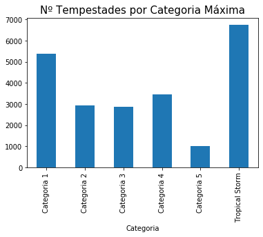
#Major Hurricanes by Year
plt.title("Nº Furacões Graves por ano (Cat>=3)",fontsize = 15)
major_df = dfplot[dfplot.Categoria.apply(lambda x: 0 if x[-1]=='m' else int(x[-1]))>=3]
major_df.groupby('Year')['ID'].count().plot()
plt.xlabel("Ano");
# plt.savefig("figs/major_hurricanes_year.jpg")
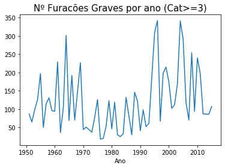
Nos plots abaixo usaremos a biblioteca troPYcal. Internamente ela tem o dataset HURDAT2 atualizado e possui funções de visualização prontas, simples de serem usadas.
Referência: https://tropycal.github.io/tropycal/examples/index.html
hurdat_atl = tracks.TrackDataset(basin='north_atlantic',source='hurdat',include_btk=False)
storm = hurdat_atl.get_storm(('michael',2018))
#
storm.plot(return_ax=True)
plt.savefig('../figs/troPycal_michal18.jpg')
--> Starting to read in HURDAT2 data
--> Completed reading in HURDAT2 data (4.0 seconds)
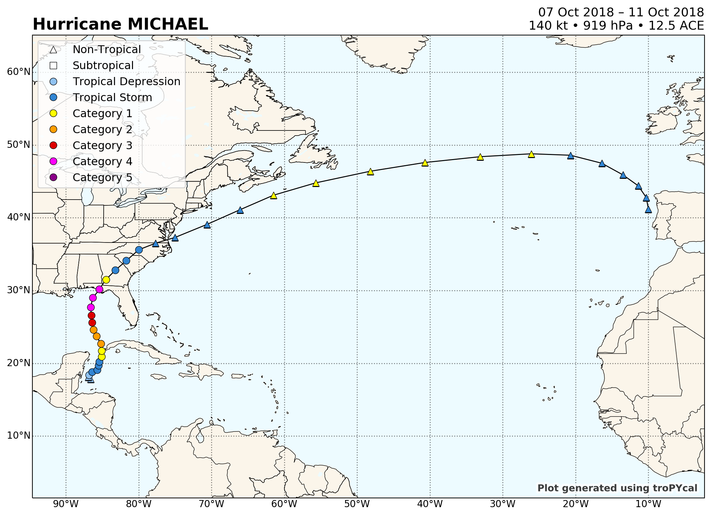
storm.plot_tors(plotPPH=True)
plt.savefig('../figs/troPYcal_michaelPPH.jpg')
--> Starting to read in tornado track data
--> Completed reading in tornado data for 1950-2018 (10.42 seconds)
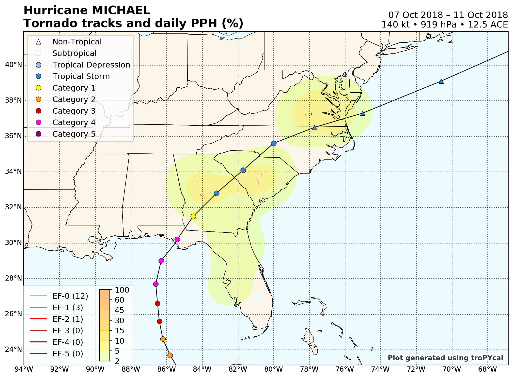
<Figure size 432x288 with 0 Axes>
storm.plot_nhc_forecast(forecast=2,return_ax=True)
plt.savefig('../figs/troPYcal_michael_fore2.jpg')
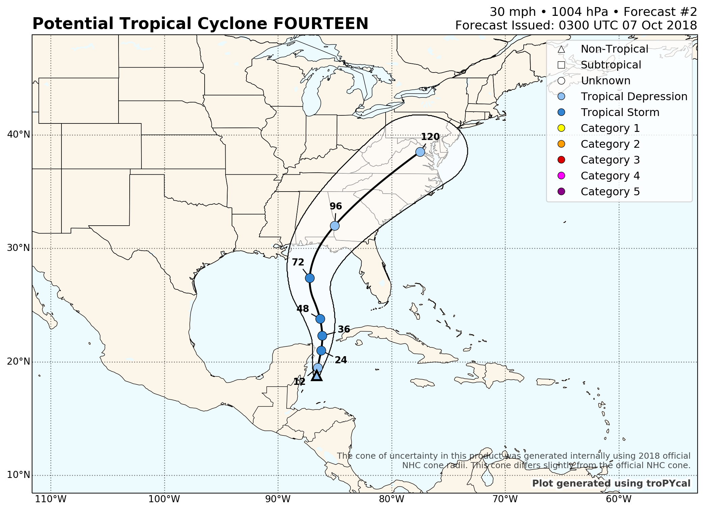
storm.plot_nhc_forecast(forecast=12,return_ax=True)
plt.savefig('../figs/troPYcal_michael_fore12.jpg')
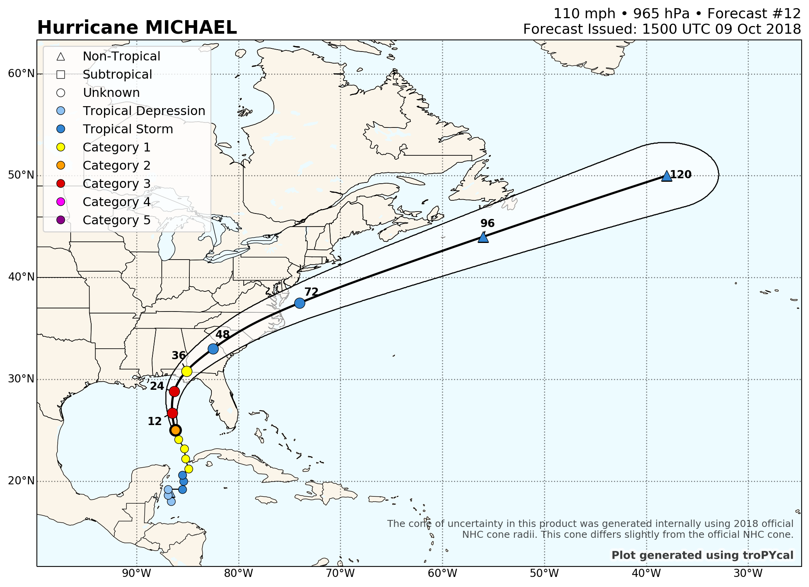
ibtracs = tracks.TrackDataset(basin='all',source='ibtracs',ibtracs_mode='jtwc_neumann',catarina=True)
storm = ibtracs.get_storm(('catarina',2004))
storm.plot(return_ax=True)
plt.savefig('../figs/troPYcal_catarina.jpg')
--> Starting to read in ibtracs data
--> Completed reading in ibtracs data (114.01 seconds)
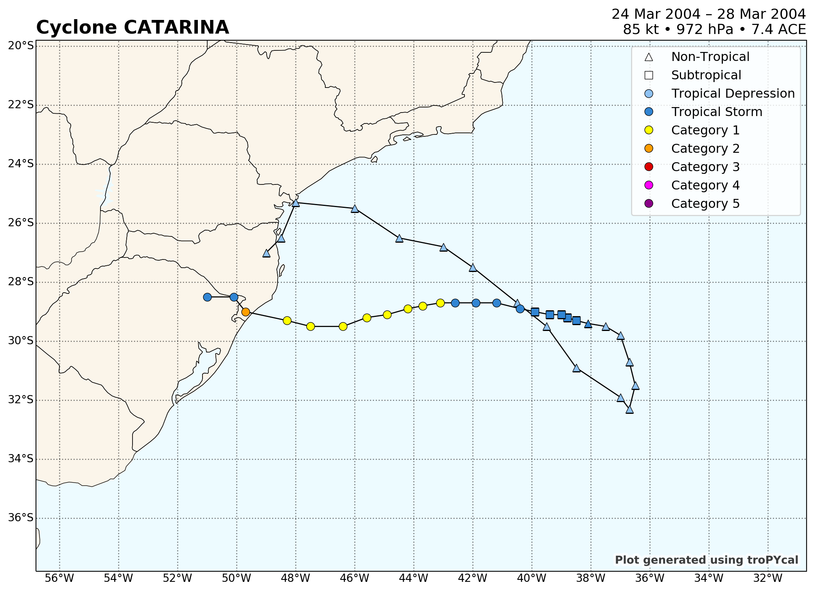
tor_data = tornado.TornadoDataset()
tor_ax,domain,leg_tor = tor_data.plot_tors(dt.datetime(2011,4,27),plotPPH=True,return_ax=True)
tor_ax
plt.savefig('../figs/troPYcal_dailyPPH.jpg')
--> Starting to read in tornado track data
--> Completed reading in tornado data for 1950-2018 (9.15 seconds)
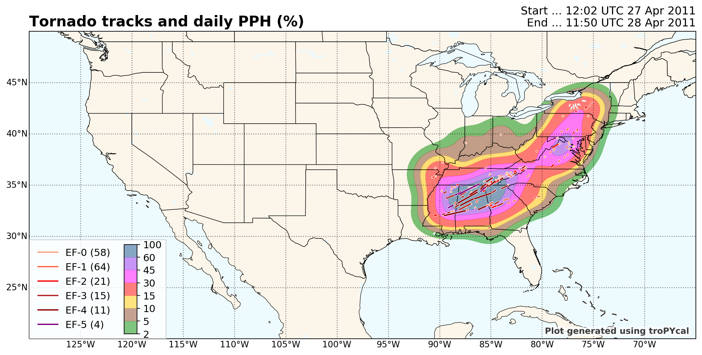
hurdat_atl = tracks.TrackDataset(basin='north_atlantic',source='hurdat',include_btk=False)
# #
hurdat_atl.assign_storm_tornadoes(dist_thresh=750)
# #
storm = hurdat_atl.get_storm(('ivan',2004))
# #
storm.plot_tors(plotPPH=True,return_ax=True)
plt.savefig('../figs/troPYcal_ivan04.jpg')
--> Starting to read in HURDAT2 data
--> Completed reading in HURDAT2 data (8.13 seconds)
--> Starting to read in tornado track data
--> Completed reading in tornado data for 1950-2018 (9.86 seconds)
--> Starting to assign tornadoes to storms
--> Completed assigning tornadoes to storm (403.30 seconds)
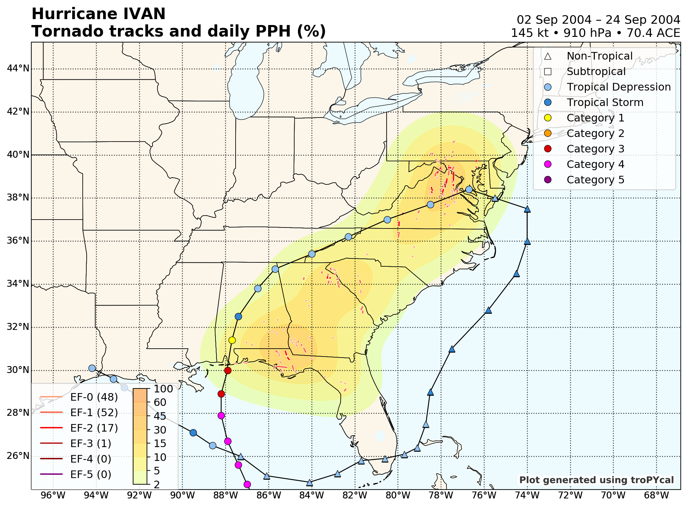
hurdat_atl = tracks.TrackDataset(basin='north_atlantic',source='hurdat',include_btk=False)
#Retrieve Hurricane Michael from 2018
storm = hurdat_atl.get_storm(('michael',2018))
#Retrieve the 2017 Atlantic hurricane season
season = hurdat_atl.get_season(2017)
#Printing the Storm object lists relevant data:
print(storm)
print(hurdat_atl.search_name('Michael'))
#
--> Starting to read in HURDAT2 data
--> Completed reading in HURDAT2 data (4.39 seconds)
<tropycal.tracks.Storm>
Storm Summary:
Maximum Wind: 140 knots
Minimum Pressure: 919 hPa
Start Date: 0600 UTC 07 October 2018
End Date: 1800 UTC 11 October 2018
Variables:
date (datetime) [2018-10-06 18:00:00 .... 2018-10-15 18:00:00]
extra_obs (int64) [0 .... 0]
special (str) [ .... ]
type (str) [LO .... EX]
lat (float64) [17.8 .... 41.2]
lon (float64) [-86.6 .... -10.0]
vmax (int64) [25 .... 35]
mslp (int64) [1006 .... 1001]
wmo_basin (str) [north_atlantic .... north_atlantic]
More Information:
id: AL142018
operational_id: AL142018
name: MICHAEL
year: 2018
season: 2018
basin: north_atlantic
source_info: NHC Hurricane Database
source: hurdat
ace: 12.5
realtime: False
[2000, 2012, 2018]
hurdat_atl.ace_climo(plot_year=2018,compare_years=2017)
plt.savefig('../figs/troPYcal_ACE.jpg')
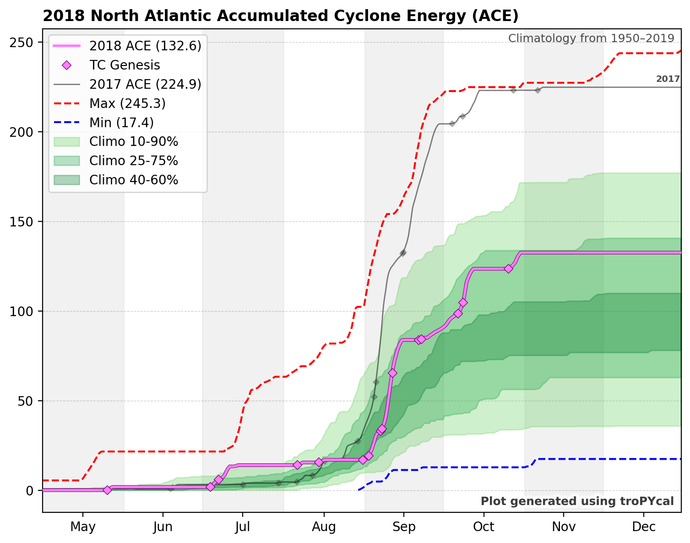
<Figure size 432x288 with 0 Axes>
hurdat_atl.ace_climo(rolling_sum=30,plot_year=2018,compare_years=2017)
plt.savefig('../figs/troPYcal_ACE_rolling.jpg')
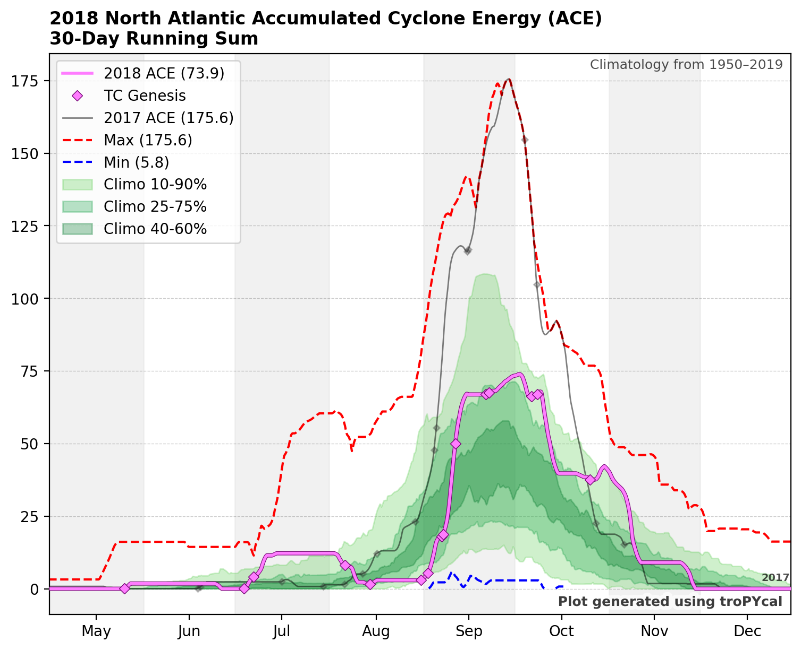
<Figure size 432x288 with 0 Axes>
hurdat_atl.wind_pres_relationship(storm=('sandy',2012))
plt.savefig('../figs/troPYcal_wind_press.jpg')
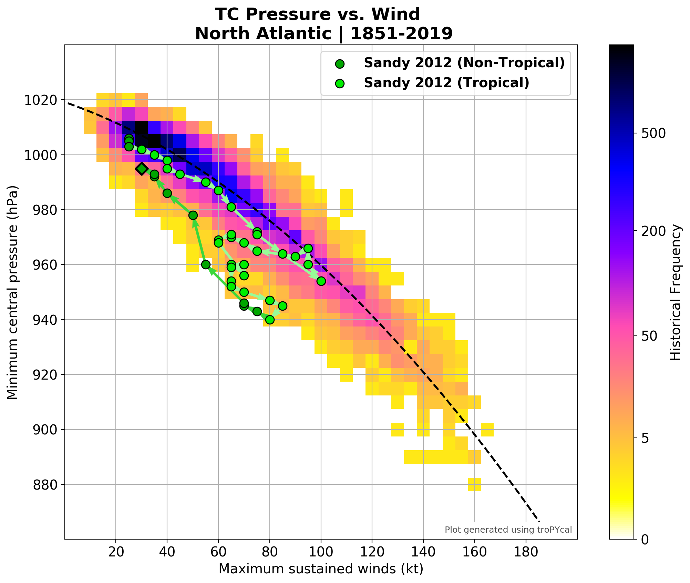
<Figure size 432x288 with 0 Axes>
# ibtracs = tracks.TrackDataset(basin='all',source='ibtracs',ibtracs_mode='jtwc_neumann',catarina=True)
ibtracs.gridded_stats(request="maximum wind",return_ax=True)
#
plt.savefig('../figs/troPYcal_maxwind.jpg')
--> Getting filtered storm tracks
--> Grouping by lat/lon/storm
--> Generating plot
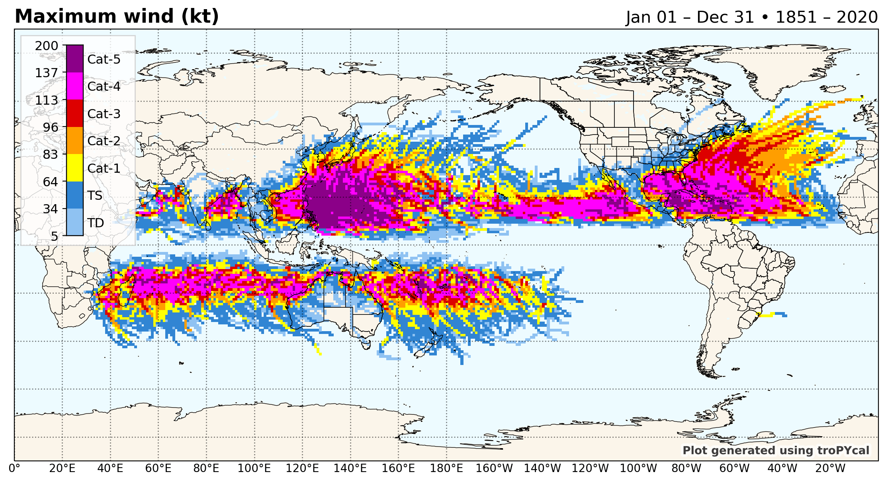
ibtracs.gridded_stats(request="number of storms",thresh={'dv_min':30},prop={'cmap':'plasma_r'})
plt.savefig('../figs/troPYcal_num_storms.jpg')
--> Getting filtered storm tracks
--> Grouping by lat/lon/storm
--> Generating plot
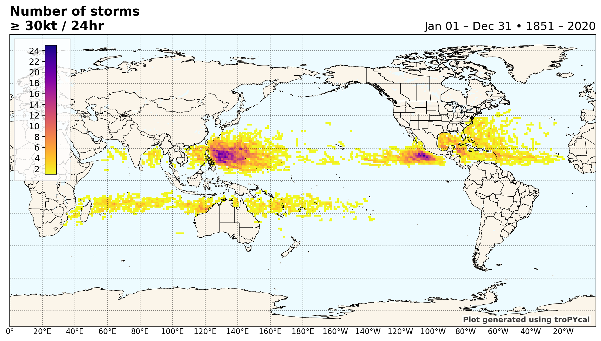